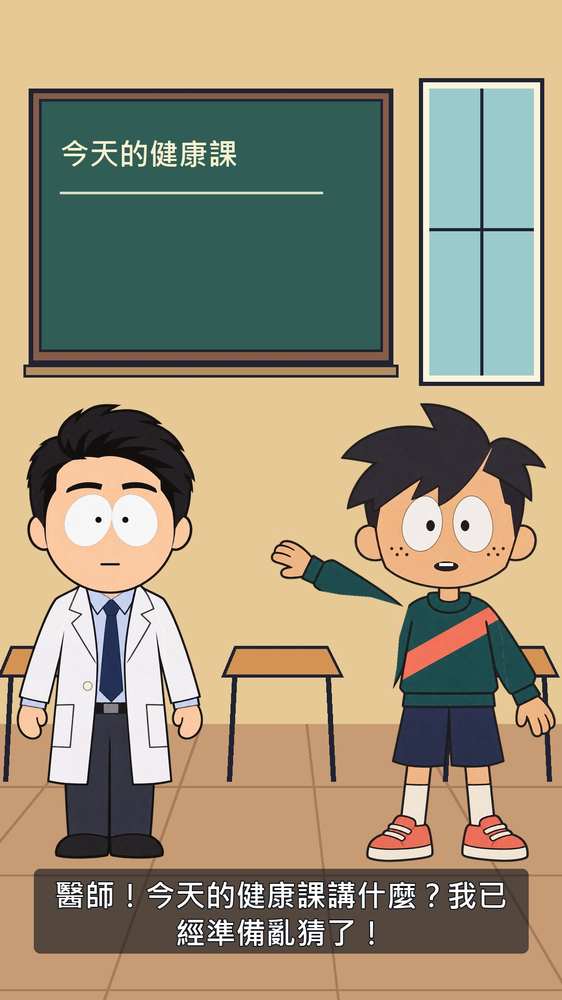
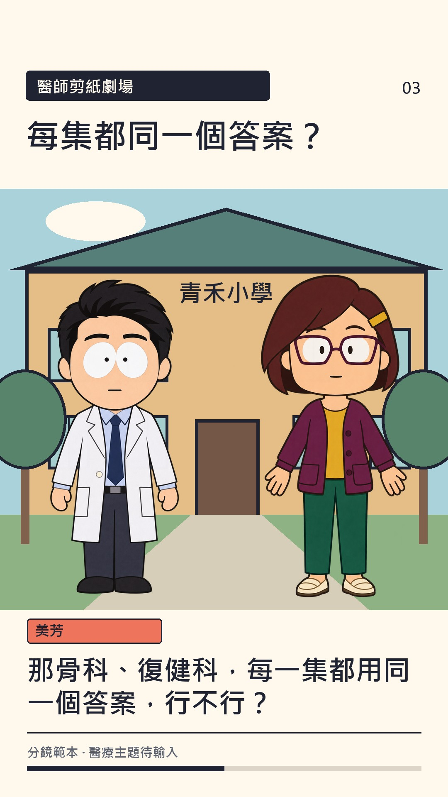
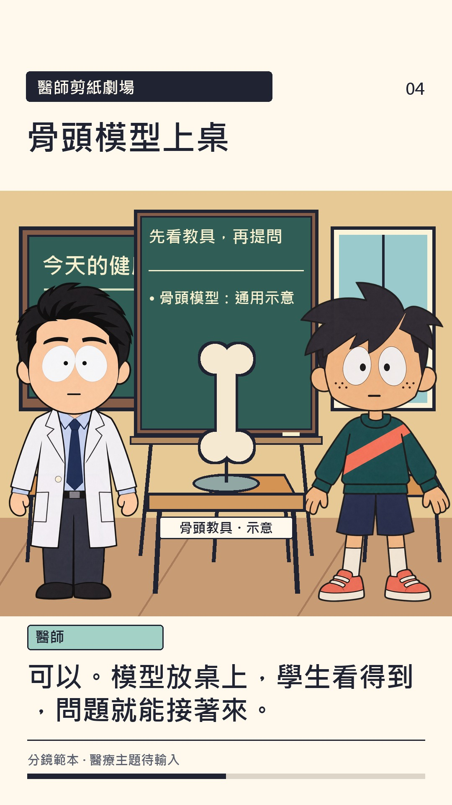
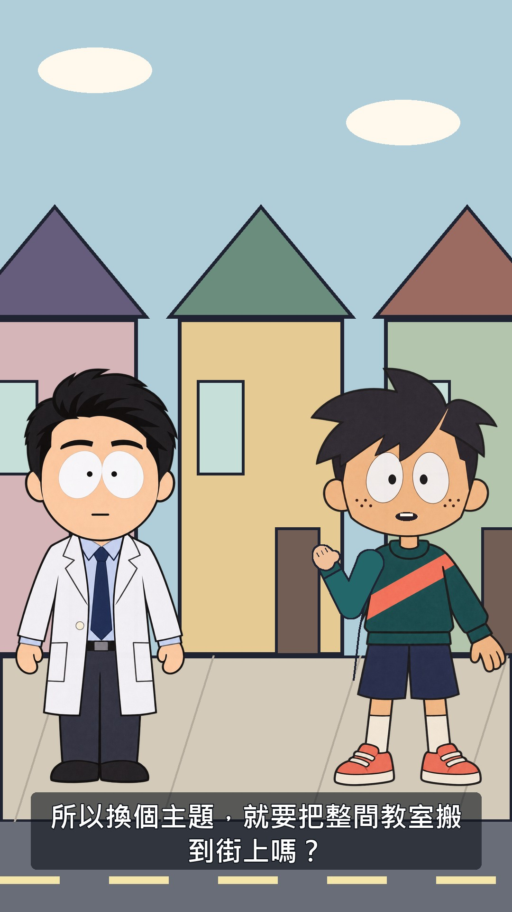
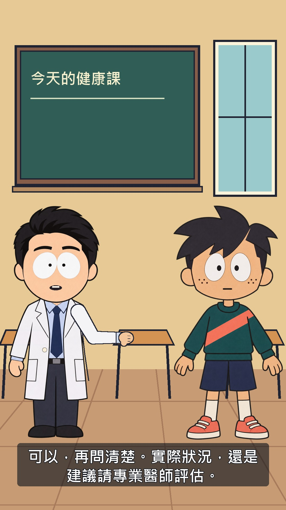

01 · 教室 · 角色對話 · 提問 · 5.1s（估）
先猜，再找答案？
阿洛：醫師，今天健康課要講什麼呢？我可以先猜猜看嗎？
動作：阿洛舉手，用真正請教的疑問句發問；問完等待醫師回答。
反應：醫師下一幕先回應阿洛的問題，再帶到黑板。
鏡頭：固定尺度・阿洛發言 · 來源：無臨床說法
待審稿 · 手機滿版場景 9:16 · 版本 4aeb70abf51339ac · 約 47.7 秒（估）
尚未生成配音、配樂或影片。請先修改或確認腳本與分鏡。

阿洛：醫師，今天健康課要講什麼呢？我可以先猜猜看嗎？
動作：阿洛舉手，用真正請教的疑問句發問；問完等待醫師回答。
反應：醫師下一幕先回應阿洛的問題，再帶到黑板。
鏡頭：固定尺度・阿洛發言 · 來源：無臨床說法

醫師：先有主題，再查資料。你看黑板，我把關係整理給你看。
動作：師生同尺度分站黑板兩側，醫師用指示棒介紹條列與箭頭。
反應：阿洛看完黑板再接話，不讓教具成為純背景。
鏡頭：固定尺度・醫師發言 · 來源：無臨床說法

美芳：也能放個骨頭模型嗎？讓學生看著教具，再問問題，好嗎？
動作：校園中美芳提出教具建議，醫師聽完帶回教室示範。
反應：不把每一集固定成有人說錯、醫師糾正。
鏡頭：固定尺度・美芳發言 · 來源：無臨床說法

醫師：可以。模型放桌上，學生看得到，問題就能接著來。
動作：醫師與阿洛同尺度站在模型兩側；桌面有骨頭教具與支架。
反應：阿洛觀察模型；本幕只展示教具演法，不提供疾病或精確解剖說法。
鏡頭：固定尺度・醫師發言 · 來源：無臨床說法

阿洛：所以換個主題，就要把整間教室搬到街上嗎？
動作：街道中阿洛追問，醫師保持同尺度冷面聽完。
反應：從教具示範轉成生活情境，用接話推進笑點。
鏡頭：固定尺度・阿洛發言 · 來源：無臨床說法

美芳：不用搬教室。看主題，選適合的場景、黑板或模型。
動作：街道上用並列教學卡比較兩種敘事用途，兩位角色保持同尺度。
反應：美芳代觀眾回應，不把所有內容塞成醫師獨白。
鏡頭：固定尺度・美芳發言 · 來源：無臨床說法

醫師：來，猜一下：先看分鏡，還是直接開拍？你確認了才開拍。
動作：師生站在黑板兩側，列出兩個選項，先交給使用者審閱。
反應：阿洛準備接話；修改確認之前不生成聲音或影片。
鏡頭：固定尺度・全員同框 · 來源：無臨床說法

阿洛：所以先看分鏡再拍嗎？如果還有問題，可以再問嗎？
動作：阿洛自然舉手追問，以「嗎？」結尾，不在問題後接斷言。
反應：醫師接著回答，並用結論與個別評估提醒收尾。
鏡頭：固定尺度・笑點留白 · 來源：無臨床說法

醫師：可以，再問清楚。實際狀況，還是建議請專業醫師評估。
動作：醫師先回答學生，再以專業評估提醒收束；提醒會完整配音與上字幕。
反應：阿洛聽完，結尾保留停頓，不再接笑話蓋過結論。
鏡頭：固定尺度・醫師發言 · 來源：無臨床說法